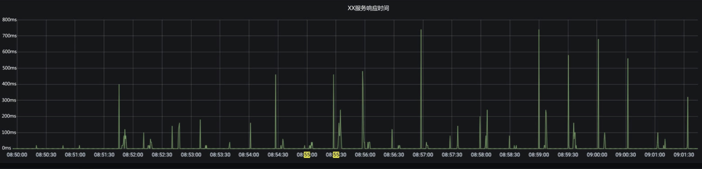

- 00 开篇词 互联网时代，人人肩负容量保障的职责.md.html
- 01 容量保障的目标：容量保障的目标是什么？该如何度量？.md.html
- 02 容量测试与验证：怎样科学实施容量测试？.md.html
- 03 容量指标分析经典5问：响应时间真的是越短越好吗？.md.html
- 04 容量治理的三板斧：扩容、限流与降级.md.html
- 05 全链路压测：系统整体容量保障的“核武器”（上）.md.html
- 06 全链路压测：系统整体容量保障的“核武器”（下）.md.html
- 07 工具进化：如何实现一个分布式压测平台.md.html
- 08 容量预测（上）：第三只眼，通过AI预测服务容量瓶颈.md.html
- 09 容量预测（下）：为不同服务“画像”，提升容量预测准确性.md.html
- 10 浅谈排队论：数学之美，通过建模计算容量.md.html
- 11 与时俱进：云原生下的容量保障新趋势.md.html
- 12 大促容量保障体系建设：怎样做好大促活动的容量保障工作（上）.md.html
- 13 大促容量保障体系建设：怎样做好大促活动的容量保障工作（下）.md.html
- 14 容量保障组织建设：容量保障需要什么样的团队？.md.html
- 15 小公司也能做好容量保障：建设经济实用型的容量保障体系.md.html
- 加餐 学习容量保障的那些经典资料.md.html
- 结束语 做时间的朋友，成功是持续累积而成的.md.html
- 捐赠
03 容量指标分析经典5问：响应时间真的是越短越好吗？
你好，我是吴骏龙。今天咱们多聊聊干货，我会与你分享和解答容量指标分析的几个经典问题。
有名言道“数据是钢，分析是铸造”，容量指标只是摆在桌面上的数据而已，要让这些数据产生价值，需要通过分析挖掘出背后深藏的容量隐患。如果能练就一双火眼金睛，从这些纷繁复杂的指标中快速识别出潜在的容量隐患，就能最大程度上规避可能发生的容量事故。你不仅将成为一名高手，还能为公司创造巨大的价值。
不过，在实践中我发现分析容量指标还真是一项极具挑战的任务，其中很大一部分原因在于，系统容量受制于多种因素，牵涉到多个指标，复杂程度远远超过想象。下图是我分类整理过的指标集合，你可以看到，分析容量指标需要对服务架构、中间件、服务链路等环节都有深入理解，这就导致很多人一上来就撞了南墙，颇有“从入门到放弃”的感觉，坚持下来的人也往往会遇到各种误区，艰难前行。
容量指标分析作为一项实践性很强的工作，是很难通过理论学习全面掌握的。因此在这一讲中，我会直接通过“问题驱动+案例分析”的方式进行讲解。这些问题都是我在实践中遇到的经典问题，也是很多初学者的高频困惑点，你可以结合这些思路，在实践中多去尝试，相信很快你就能成为容量分析的大牛。
闲言少叙，我们直接进入正题。
问题一：响应时间到底是关注平均值，还是分位线？
响应时间是指从发出请求开始到最后收到响应所需要的时间，作为服务容量最显著的反馈指标，响应时间是最需要引起我们重视和全面了解的。针对这个问题我先说结论，对于互联网服务，响应时间应更关注分位线，我们常说的TP95、TP99或95线、99线这类称呼就是指分位线。分位线的概念不难理解，将所有请求的响应时间排序，取前95%中最后一个请求的响应时间，即为95线，它表示至少有95%的请求响应时间小于等于这个值。
关注分位线甚于平均值的主要原因在于，平均值很容易“冲淡”一些耗时较长的请求，导致容量问题被掩盖。
考虑一个场景，某服务的常态响应时间为100ms，可接受的最大响应时间为150ms，当服务负载升高至接近瓶颈时，有约20%的请求响应时间增加了一倍达到200ms，也就是说大约有20%的用户有可能已经受到影响。我们简化一下问题，假设考虑100个请求，这时平均响应时间是120ms[(80×100ms + 20×200ms) / 100=120ms]，看似还好，而95线已经达到了200ms（排序后第95个请求响应时间为200ms），显然，95线更容易发现容量隐患。
以分位线作为响应时间关注点的本质在于，尽管只是小部分请求的响应时间增长，但服务容量已经处于不充足的萌芽状态了，这时候如果不加干预，很有可能服务容量会迅速恶化。因此，虽然这个问题是针对响应时间的，但其实可以推广到很多地方，比如数据库的读写耗时、缓存的读取耗时等等，都应当关注分位线。
问题二：响应时间一定越短越好吗？
这又是一个关于响应时间的问题，针对这个问题，你可能会说，响应时间作为一个直接能被用户感受到的外部指标，肯定是越短越好啊，真的是这样吗？我们来看一个案例。
下图展示了某服务在进行容量测试时的现场监控情况，可以看到服务的响应时间（95线）始终保持在35ms以下，对于这个服务而言是非常理想的响应时间，但这时负责盯盘的运维人员却告诉我们，目标服务抛出了大量的异常，这是为什么呢？- - 当时负责测试的同学是一位新手，查看了压测日志才恍然大悟，原来几乎所有的请求都返回了错误的响应体（当然，服务本身的状态码设置也有问题，无论请求正常还是异常，一律都返回了200）。进一步排查发现，测试数据存在问题，导致对该被测服务的测试请求始终会走入异常分支，主体的业务逻辑都没有经过，响应时间当然就短了。而这位测试同学也没有对响应体设置断言，未能在第一时间发现这个问题。
响应时间越短越好，是建立在场景正确，服务无异常的基础上的。 上述这个问题虽然不属于服务的容量问题，但是在容量测试过程中时常会出现，如果仅以响应时间为观察目标，就会得到错误的容量判断，最终无法达到容量保障的效果，这是初学者很容易犯的失误。
解决这个问题的思路也很简单，就是加强全方位的指标监控，关注响应时间的同时，还要关注错误率、TPS、请求成功率和异常率等指标。我的团队在每次进行容量测试前，就会与研发一起先将这些需要观察的指标配置成一个简单的监控面板，在执行测试时可以方便观察，这样就能最大化地预防这个问题的发生，你不妨可以参考学习。
问题三：CPU利用率一定越低越好吗？
响应时间不是越低越好，那么CPU利用率是不是越低越好呢？
我们知道CPU是一个计算机的核心计算组件，CPU利用率代表了CPU工作的饱和程度，指CPU工作时间占总时间的百分比。
那如果CPU利用率低，是不是服务就一定没有容量问题呢？答案是否定的，我们来看一个例子。
下面有两张监控指标图，展示了某服务在相同时间段的响应时间和CPU利用率情况。可以看到，在09：00 - 09：35这个时间段服务的响应时间暴增，已经严重影响了线上功能，但CPU利用率始终维持在一个较低的水位（图中纵轴为所有CPU核心的总利用率，该服务CPU共有8核，总计上限为800），光看CPU利用率似乎没有观察到任何问题。
- 我们顺着服务链路继续排查，发现该服务有大量调用数据库的操作，而在发生问题的时候，数据库的查询耗时大幅增加，似乎问题已经有了眉目。
再往下深挖，我们发现该服务使用了线程池去处理业务，线程池使用了ForkJoinPool，默认大小为CPU核数（8核）。
CompletableFuture<Map<String, XXDTO>> future =
CompletableFuture.supplyAsync(
() -> xxService.getXX(id)); //未自定义线程池，默认使用ForkJoinPool
但处理的任务却伴随着大量数据库查询等IO操作。这时一旦数据库负载增加，耗时变长后，线程就会被长时间阻塞，由于线程池过小导致后续任务只能排队。遗憾的是，排队的队列又是一个无界队列，从而形成了恶性循环，响应时间暴增。
查到了根因，解决方法也就很简单了，将线程池的大小重新调整，并优化排队策略，就可以避免这一问题。
因此，CPU利用率低只能说明CPU不忙，并不能说明在其他地方没有容量瓶颈。 在上面这个例子中，容量瓶颈发生在了数据库上，也许在其他场景中，瓶颈还会发生在缓存，或是对其他服务的同步调用上。因此看待这个问题的视角与“问题二”是类似的，需要联动多个指标一起去分析和排查，不要只关注单一指标。
问题四：压不上去了，就是服务容量达到瓶颈了吗？
在容量测试时，我们也会遇到一些指标判断的误区，比如，在提升了施压端的输出压力后，服务的TPS并没有明显提升，那是不是就可以说服务容量达到了瓶颈呢？
首先，我要明确的是，服务容量是否达到瓶颈，并不是靠施压端是否能“压上去”来判断的，而是依靠服务端的容量指标去判断的。怎么判断呢？很多资料会告诉你找拐点，但很遗憾，现实中这样的拐点不太会出现，除非你真的不惜代价地增加压力。
一般来说，如果服务一切正常，当增加压力时，TPS是会呈比例上升的，同时响应时间比较稳定。如果TPS上升的速率开始变缓，这时候其实容量可能已经出现瓶颈了，你可以再结合响应时间和服务资源指标确诊。
那么，为什么不能靠施压端的现象去判断呢？道理也很简单，因为压不上去，不一定就是服务不行，有可能是施压端自身出现了瓶颈。
在容量测试过程中，如果你发现增加压力后，服务的TPS没有提升，但响应时间也没有明显的增加，可能还会有一些抖动，这时你一定要检查一下压测端的资源消耗情况。
类似JMeter这样的压测工具是基于传统的BIO（阻塞式IO）线程模型的，一个线程同时只能处理一个连接，而单机能够支撑的线程数总是有极限的，达到这个极限后，单纯调高施压端的线程数参数，实际并不会带来更高的真实线程数，也不会增加对服务端的压力。你可以检查压测端的CPU利用率来判断，如果CPU利用率已经打满，就需要增加新的压测节点了。
此外，带宽也是一个常见的制约压测端能力的指标，尤其是当响应的返回体很大的时候，就比较容易打满带宽，这种情况甚至会影响到正常服务的访问，一定要小心。涉及多数据中心的服务可能还会遇到跨地区专线带宽打满的问题，也都是需要关注的。
总结一下，在容量测试过程中如果遇到压不上去的情况，对施压端的资源消耗要留个心眼，不要轻易认为就是服务容量不足了。此外，在实践中，施压端瓶颈几乎都发生在压力机的CPU和带宽消耗上。因此，我在推动压测自动化实施过程中，将施压端的监控也纳入到了自动化体系里面，一旦施压端出现资源瓶颈，就会自动告警提示测试人员。如果你觉得这招不错，可以在你的实践中尝试一下。
问题五：指标只是偶尔“抖动”一下，要不要关注？
上面聊到的问题中，很多指标都是可以定量判断容量风险的，比如响应时间99线超过某阈值、CPU利用率超过某水位，等等。但是，如果这些指标只是偶尔抖动一下，我们要不要关注呢？
当然要关注，抖动是一类很容易被忽视的场景，我曾经看到一个服务每隔一段时间，响应时间会突然飙升一个尖刺，询问了服务负责人，对方很不以为然，表示这种情况一直存在，从来没有造成过什么影响，觉得我有点小题大做，结果在高峰期这个服务还真出事了。
没有找到根因的抖动是很危险的，因为你根本不知道它未来会不会导致大事故的发生。我们再来看一个例子，如下图所示，同样是有一个服务的响应时间，每隔一段不固定周期就会出现一个尖刺，似乎也没有影响用户。但经过排查后，发现该服务会在一些特殊情况下调用某第三方服务，用作补偿数据，这次额外的调用会引发响应时间的增加。
- 这个逻辑本身其实没有什么问题，但隐患在于，服务与第三方调用是有配额限制的，但超出配额后没有兜底措施，一旦这种特殊场景增多，甚至遇到外部攻击，服务容量立刻就会雪崩。
因此，当你遇到容量指标抖动的情况，尤其是一些莫名其妙的抖动，不要忽视它，尽可能找到根因。如果服务内部排查不出问题，不妨检查一下有没有第三方同步调用，或者底层的基础设施和中间件有无问题。对于那些实在无法确定根因的抖动（在复杂微服务体系下，总会有那么些悬案），要加强监控，并制定故障恢复预案，以防出现容量问题时手忙脚乱。
总结
在安全领域，有一个著名的法则叫海恩法则[1]，它告诉我们，每一起严重事故的背后，必然有29次轻微事故和300起未遂先兆，以及1000起事故隐患，事故的发生是量的积累的结果。海恩法则其实最终是想表达，任何不安全事故都是可以预防的。就像我们上面提到的5个经典问题，在容量保障领域，任何不安全事故也是可以预防的，你都学会了吗？
首先，容量指标分析不能仅关注单一指标，无论是响应时间还是CPU利用率，单个指标的优劣并不一定能完全说明问题，需要联动去看。从实践角度，建立监控大盘去汇总多个关联性指标，是一个不错的做法。
其次，做容量测试时如遇压不上去的情况，应及时关注施压端的资源消耗程度，CPU利用率和带宽是常见的会影响施压能力的指标，我们同样可以通过监控告警的方式，自动暴露问题，减少人工判断的成本。
最后，我们不要轻易放过抖动情况，即便目前为止对系统功能没有影响，也要重视。抖动可以先从服务内部进行排查，看一下是不是有性能问题或是调用不合理之处，之后可以继续排查第三方同步调用和基础设施的问题，哪怕最终无法查到根因，我们也要制定预案，预防风险。
容量指标分析作为实践性极强的内容，所有这些知识点都需要你在实践中反复推敲和感受，方能融会贯通，正所谓神枪手都是子弹喂出来的，我只能帮助你少走弯路，但无法给到捷径。希望你能不断总结不断思考，形成属于你自己的容量指标分析最佳实践。
注[1]：海恩法则（Ohain’s law）这个称呼有一定争议，一说为海因里希法则（Heinrich’s Law）在国内的误译。由于海恩法则已在大量文献中被引用，作为约定俗成的说法，我们在文中继续保留。
课后讨论
你在容量指标的分析过程中有遇到过我上面提到的，或者没有提到的困惑吗？如何解决的？如果你有一些自己的经验，也欢迎给我留言，我们一起交流。如果你觉得这一讲对你有帮助的话，欢迎把它分享给你的朋友。
© 2019 - 2023 Liangliang Lee. Powered by gin and hexo-theme-book.